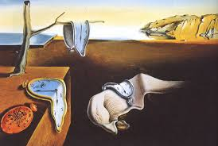

Main title
This is a subtitle
This is the content of this section.
This technique is used to increase accessability of a web page. It allows navigation to be possible both via mouse and keyboard.
This element is used to print text in a small format, usually used to legal and copyright information.
 The copyright of this image is owned by Salvidor Doli.This is the content of this section.
Usually, the alt attribute is used for img elements, but can be left empty when the image is for decorative purposes.
The longdesc attribute is used to either supply a hyperlink with a description to an image or to supply an entirely
new file with a description such as a .txt file

This link describes some techniques for web programming in html.
The mark element is used to highlight keywords searched by the user.